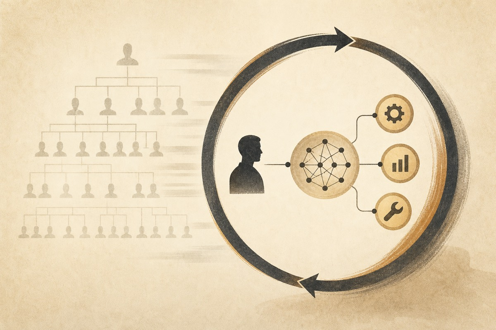
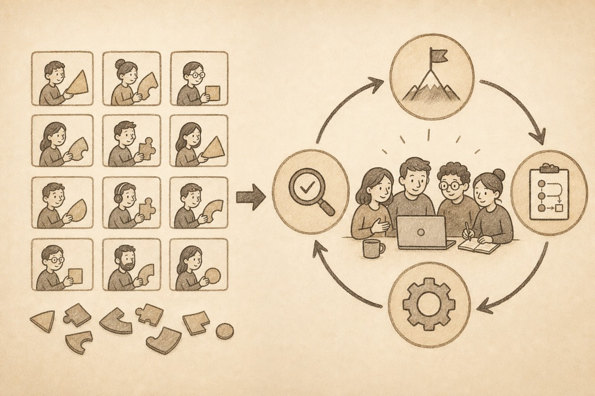
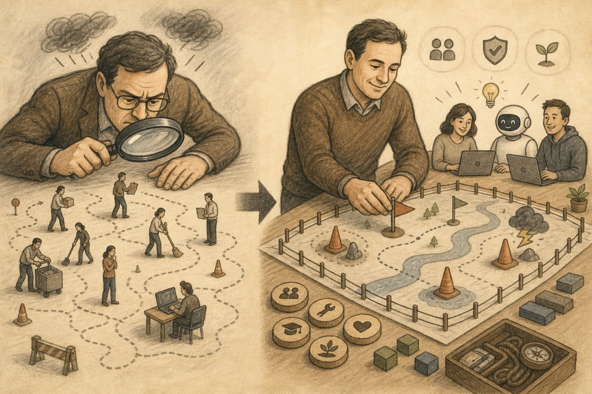

Chapter 4 / 6 parts
How Organizations May Evolve
Organizations will not disappear. But every role, layer, interface, and boundary has to justify itself again.
Chapter 4

After Division of Labor: Chapter 4
How Organizations May Evolve
If the argument in Chapter 3 is right, the next question is practical: what should organizations do?
For more than two centuries, modern organizations often assumed that complex tasks should be split into finer roles, clearer responsibilities, longer management chains, thicker interfaces, and more process. That belief was successful enough to become default.
But if productivity conditions change, those defaults must be re-examined. The question is not whether organizations disappear. The real question is which organizational form best fits the new action unit.
Firms will not vanish because agents appear. Teams will not become unnecessary. What changes is the internal granularity of organizations: role design, interface thickness, management function, and firm boundaries.
1. Old organizations will not vanish overnight, but their defaults weaken
When an organizational form succeeds for a long time, people start treating it as natural. Roles feel natural. Hierarchies feel inevitable. Handoffs feel like common sense.
They are not natural facts. They are historical products of a world built around weak action units and deep division of labor.
Why did organizations need many narrow roles? Because each action unit could do little. Why did they need layers of management? Because task chains were long, information asymmetry was serious, and supervision was expensive. Why did they need dense handoff processes? Because complex tasks had to pass through many limited people.
Once action units become stronger, those structures lose their automatic legitimacy. They may still exist, but each additional role, handoff, and layer must prove its efficiency value again.
2. Roles move from narrow responsibility to fuller task loops

Traditional role design emphasized clear boundaries. Each person owned a small slice of the system. This made training, evaluation, replacement, and management easier.
Under new conditions, narrow role design exposes its cost more often. The narrower the role, the more it depends on upstream and downstream interfaces. More interfaces mean more loss of intention, more waiting, and more rework.
Many organizations are slowed not because local skill is missing, but because no action unit carries the work through a complete loop.
A likely direction is a shift from “clear local responsibility” to “more complete loop responsibility.” Roles may not disappear, but they will be recombined into wider task units. One person or a small team may take responsibility from goal understanding to plan, tool use, execution, and initial verification.
This does not require everyone to become a generalist. It does require more people to use agents to carry longer chains without losing context.
3. Hierarchies get thinner; management moves toward context design

Many management layers existed because organizations had to decompose goals downward, collect information upward, and correct deviations across a long chain.
As stronger action units appear, some traditional management functions weaken. Roles built mainly on relaying messages, chasing progress, summarizing, translating, and approving will face pressure.
Other management functions become more important. Organizations still need people to define goals, allocate resources, set boundaries, design interfaces, manage risk, and make final judgments.
The center of management moves from supervising every small execution step toward building the context in which strong action units can work well.
The future value of a manager may be less about how many people they supervise and more about whether they can create lower-friction, higher-accountability structures.
4. Organizations may not need to be larger, but their effective capability can be stronger
Industrial organization often linked larger ambition with more people, more departments, and longer chains. To do bigger things, the organization had to hire more specialized roles.
In the Agent era, that link weakens. If the action unit has a larger capability radius, a smaller organization can sometimes do what once required a larger team.
Small teams get a higher ceiling. Large organizations must re-evaluate their personnel structure. Competition may increasingly depend on who builds the lower-friction human-agent system, not merely who has more headcount.
The key contrast is not simply big versus small. It is whether an organization can complete larger loops with fewer interfaces.
5. Firms still exist, but their reasons shift
A tempting overreaction is to say that if agents are strong enough, firms will be replaced by individuals and loose networks. That goes too far.
Firms still matter because capital, trust, risk, infrastructure, legal responsibility, brand, data, systems, supply chains, and physical delivery require durable entities.
The firm never existed only to divide labor. It also concentrated responsibility, capital, long-term control, and credible commitment.
What changes is the calculation of firm boundaries. Some links become easier to externalize because they are tool-based or agent-mediated. Other links become more important to internalize because they contain key context, risk, or organizational memory.
The future firm asks a different question: which tasks must preserve context, which capabilities should become organizational assets, and which links can be handled by external agents or platforms?
6. Organization design centers on three questions
First: where should task boundaries be drawn? The old default was to split complex tasks into smaller pieces. The new question is where continuity creates more value than another interface.
Second: how is context preserved? Whoever keeps the goal, standards, preferences, history, and reasoning can move through longer chains with less loss.
Third: how is responsibility redefined? Narrow roles can control local behavior, but they can also make the whole result nobody’s problem. Stronger action units require more complete accountability loops.
7. Conclusion: organizations must rebuild around stronger action units
The Agent era will not cancel organizations. It will force organizations to justify each layer of structure again.
Roles move toward fuller task loops. Hierarchies become thinner in some places. Management shifts toward context and risk design. Small teams become more capable. Firm boundaries are recalculated around capital, trust, risk, and key context.
The organization problem has not been replaced by technology. It has been reopened.